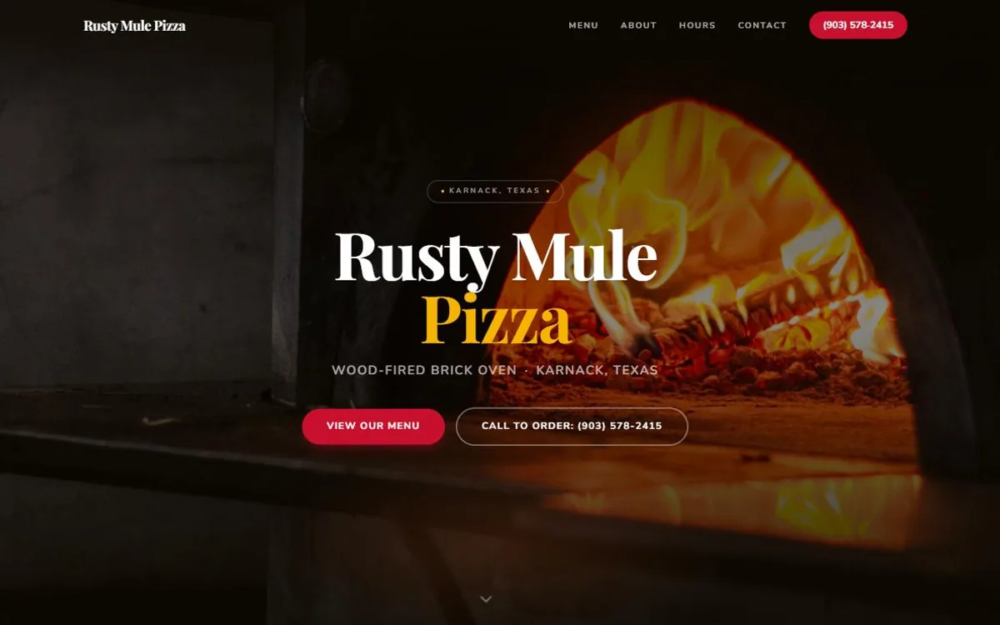

Rusty Mule Pizza
A wood-fired pizzeria in Karnack, Texas that needed its menu, hours, and phone orders in one place.
Visit site (Rusty Mule Pizza)Fast, clean sites for restaurants, service businesses, and creators. Designed, built, and launched from Bacolod City, Philippines.
Available for new projects


A wood-fired pizzeria in Karnack, Texas that needed its menu, hours, and phone orders in one place.
Visit site (Rusty Mule Pizza)A Florida land-clearing company that needed local visitors to turn into quote requests and calls.
Visit site (Rubens Removal LLC)A Filipino home kitchen in Greenville, Texas that needed its made-to-order story to sell the food.
Visit site (Pinoy Eats)An Iloilo visual artist who needed her woven canvas work shown the way it deserves.
Visit site (Mann Cayona)A personal project: a dark, atmospheric tribute site built to push layout and mood further than client work allows.
Visit site (Berserk)I am Joshua Jalandoni, a web designer and developer in Bacolod City, Philippines. I have spent four years building sites, apps, and automations, backed by a background in digital operations and AI ops that keeps every project clean and considered.
I work best with small businesses. I listen first, ask the questions that matter, and ship something finished rather than something clever. Most of my clients are restaurants, service businesses, and creators who need to look credible online and start getting calls.
Tools I use: Figma, Claude Code, GitHub, Vercel. Certified in AI Fluency and the Claude platform through Anthropic, and in AI through the Google AI Professional Certificate.
certificates earned
A layout that fits your business and your customers, not a template everyone else is already using.
Fast, mobile-friendly sites, deployed and live, with the domain and hosting sorted out for you.
Workflows that handle the repetitive parts of running your business, so you spend less time on admin.
Tell me about your business and what you need it to do. I reply to every message.